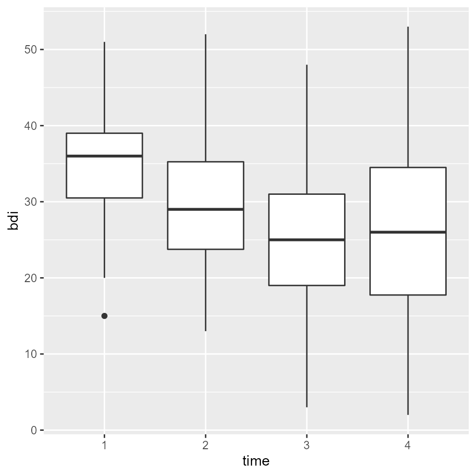
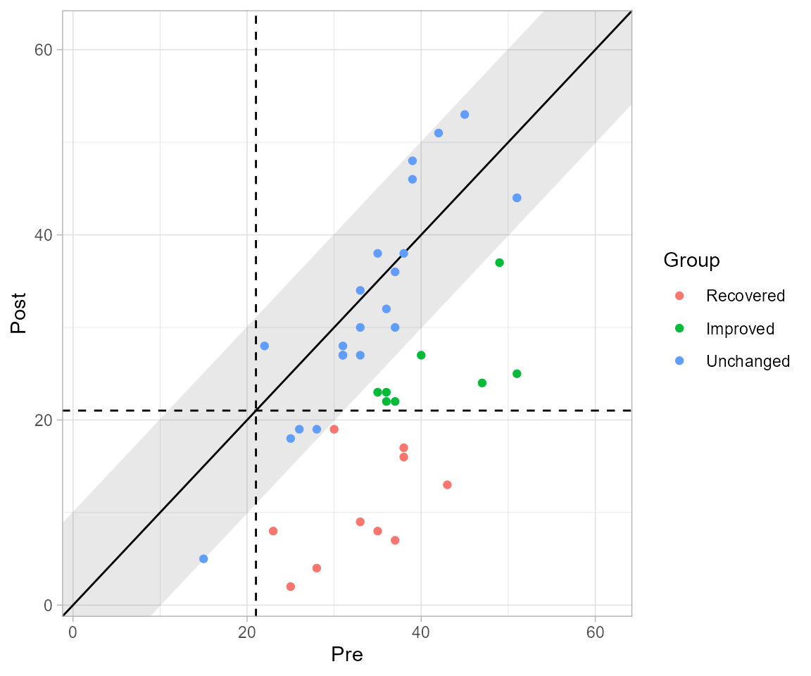
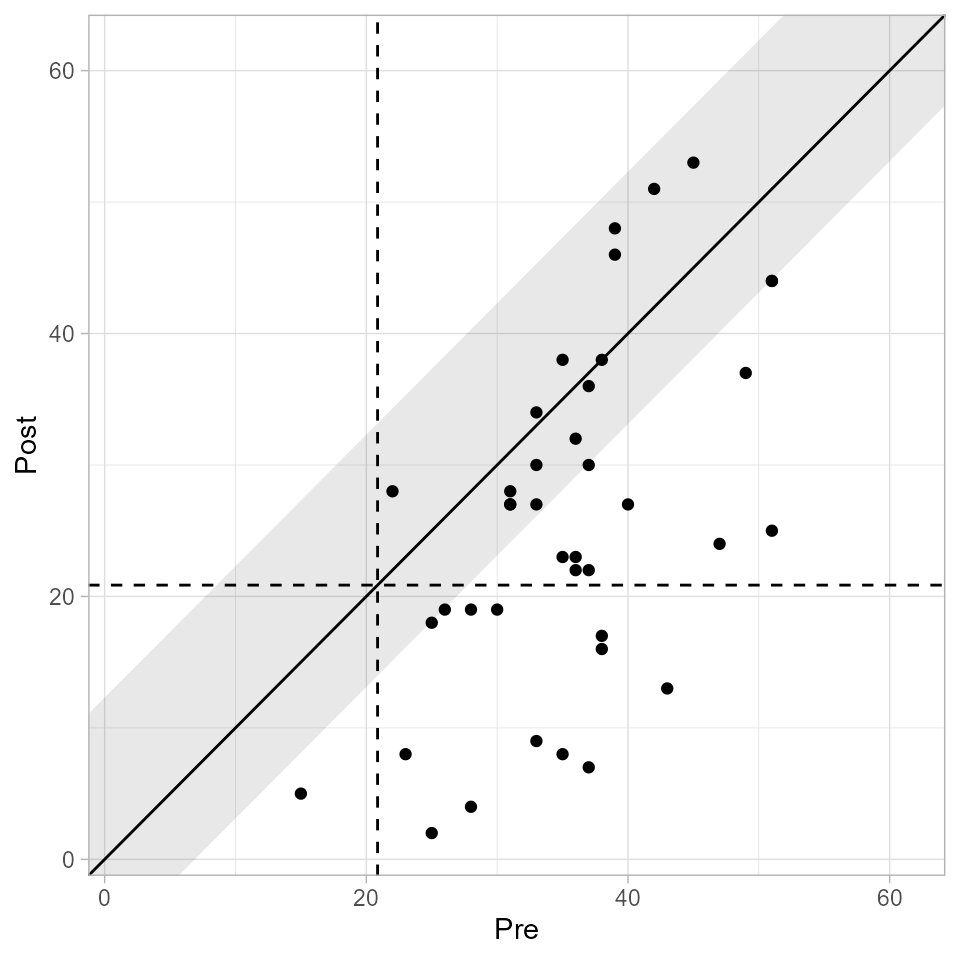

Get started
Benedikt Claus
25-05-2022
get-started.RmdTo determine the clinical significance of a intervention, you need at least a tidy data frame containing
- a column with IDs identifying individual participants,
- a column indicating the different measurements, and
- a column with a continuous outcome
and a measure of reliability for your employed instrument. Optimally, you also have descriptive statistics of a functional population, i.e. its mean and standard deviation. If you have these things, you are ready to roll.
A Typical Example
Suppose an intervention that enhances the placebo effect of
antidepressants in routine care. Claus et al.
(2020) conducted a study examining this intervention in a routine
care setting for depressive disorders by comparing a group of patients
receiving treatment as usual (TAU) with a group of patients receiving
the placebo amplification intervention (PA). They assessed patients four
times during treatment with measurements carried out pre treatment, two
times during treatment and one time post treatment. The original study
data is included in the package as claus_2020.
library(clinicalsignificance)
claus_2020
#> # A tibble: 172 × 9
#> id age sex treatment time bdi shaps who hamd
#> <dbl> <dbl> <fct> <fct> <dbl> <dbl> <dbl> <dbl> <dbl>
#> 1 1 54 Male TAU 1 33 9 0 25
#> 2 1 54 Male TAU 2 28 6 3 17
#> 3 1 54 Male TAU 3 28 9 7 13
#> 4 1 54 Male TAU 4 27 8 3 13
#> 5 2 52 Female PA 1 26 11 2 15
#> 6 2 52 Female PA 2 26 10 0 16
#> 7 2 52 Female PA 3 25 10 0 7
#> 8 2 52 Female PA 4 19 9 3 11
#> 9 3 54 Male PA 1 15 2 0 28
#> 10 3 54 Male PA 2 13 5 9 17
#> # … with 162 more rowsIt mainly contains a column identifying individual patients
(id), a column indicating the measurement
(time with values 1–4), and the four outcomes assessed
(bdi, shaps, who, and
hamd), as well as a column indicating the experimental
condition (treatment with the two experimental conditions
TAU and PA).
Let’s consider the primary outcome of the study, the Beck Depression
Inventory in its second edition (Beck et al.,
1996), known as the BDI-II. Its scores per patient and
measurement can be found in the column bdi. First, let’s
plot the results. We load the tidyverse, to gain access to
the package ggplot2 and
others for data wrangling.
library(tidyverse)
claus_2020 %>%
mutate(time = as_factor(time)) %>%
ggplot(aes(time, bdi)) +
geom_boxplot()
#> Warning: Removed 9 rows containing non-finite values (stat_boxplot).
We can see that BDI-II scores seemed to be declining over the course of treatment. But is that an effect that is meaningful or practical for patients?
Clinical Significance
Additionally to statistical significance testing, clinical significance testing is a great way to make sense of the results above. With that, we can examine if a given patient changes reliably and crosses the line between a clinical and functional population which should be of practical relevance for a patient.
A functional population for this particular example was examined by Kühner et al. (2007), who determined a mean BDI-II score of M = 7.69 (SD = 7.52) for a non-clinical German population.
In the study by Claus et al. (2020),
the reliability of the BDI-II was McDonald’s \(\omega\) = 0.801. With these values, we
have all the information we need to calculate the clinical significance
with clinical_significance().
results <- claus_2020 %>%
clinical_significance(
id = id,
time = time,
outcome = bdi,
pre = 1,
post = 4,
m_functional = 7.69,
sd_functional = 7.52,
reliability = 0.801,
type = "c"
)
results
#> Clinical Significance Results (JT)
#>
#> Category | n | Percent
#> ---------------------------
#> Recovered | 10 | 0.250
#> Improved | 8 | 0.200
#> Unchanged | 22 | 0.550
#> Deteriorated | 0 | 0.000
#> Harmed | 0 | 0.000Note that because Claus et al. (2020)
assessed patients four times during their study, but a clinical
significance analysis is usually done on pre and post assessments alone
(an exception being the HLM method), we need to specify the pre
assessment (with pre = 1) and the post assessment (with
post = 4).
We now can see that 10 patients a categorized as recovered. That means that 10 patients were in the clinical population pre intervention and in the functional population post treatment and showed a reliable change. 8 patients showed a reliable change but did not change from the clinical to the functional population. 22 patients did not change reliably – their change was not greater than the error of measurement. Fortunately, no patients deteriorated or were harmed during the study period.
You can obtain a detailed summary on all incorporated and calculated
values with summary().
summary(results)
#>
#> Clinical Significance Results
#>
#> There were 43 participants in the whole dataset of which
#> 40 (93%) could be included in the analysis.
#>
#> The JT method for calculating cutoffs and reliable change was
#> chosen and the outcome variable was "bdi".
#>
#> The cutoff type was "c" with a value of 21.02 based on
#> the following population characteristics (with lower values
#> representing a beneficial outcome):
#>
#> Population Characteristics
#>
#> M Clinical | SD Clinical | M Functional | SD Functional
#> -------------------------------------------------------
#> 35.48 | 8.16 | 7.69 | 7.52
#>
#>
#> The instrument's reliability was set to 0.8
#>
#> Individual Level Results
#>
#> Category | n | Percent
#> ---------------------------
#> Recovered | 10 | 0.250
#> Improved | 8 | 0.200
#> Unchanged | 22 | 0.550
#> Deteriorated | 0 | 0.000
#> Harmed | 0 | 0.000From that we can see that 40 participants had sufficient data to be
used in the analysis (pre and post scores). We further are
given the chosen cutoff ("c") as well as its value
(21.02).
Additionally, you can plot the results with plot(). We
know that the upper limit of the BDI-II is 63, which we can specify here
to make the plot more comprehensible.
plot(results, upper_limit = 63)
If you wish, you can plot the clinical significance categories as well.
plot(results, upper_limit = 63, show = "category")
Grouped Data
Because the study compared two groups (TAU and PA) with only the
latter one receiving the intervention of interest, this grouping
variable can be specified as well. The function call is identical to the
call above with the exception that we provide the column containing the
groups (treatment in this data set).
results_grouped <- claus_2020 %>%
clinical_significance(
id = id,
time = time,
outcome = bdi,
pre = 1,
post = 4,
m_functional = 7.69,
sd_functional = 7.52,
reliability = 0.801,
type = "c",
group = treatment
)
results_grouped
#> Clinical Significance Results (JT)
#>
#> Group | Category | n | Percent
#> -----------------------------------
#> TAU | Recovered | 3 | 0.158
#> TAU | Improved | 2 | 0.105
#> TAU | Unchanged | 14 | 0.737
#> TAU | Deteriorated | 0 | 0.000
#> TAU | Harmed | 0 | 0.000
#> PA | Recovered | 7 | 0.333
#> PA | Improved | 6 | 0.286
#> PA | Unchanged | 8 | 0.381
#> PA | Deteriorated | 0 | 0.000
#> PA | Harmed | 0 | 0.000From this output, we can see that more patients recovered and improved in the PA group (intervention) as compared to the TAU group (control). More patients were categorized as unchanged in the TAU group than the PA group. These results can also be plotted.
plot(results_grouped, upper_limit = 63)
Other Methods
There have been several proposed methods to conduct a clinical significance analysis and this packages contains most of them. Available are
- Jacobson & Truax (JT, Jacobson & Truax, 1991), the default
- Gulliksen, Lord & Novick (GLN, Hsu, 1989, 1995)
- Hsu, Linn & Lord (HLL, Hsu, 1989)
- Edwards & Nunnally (EN, Speer, 1992)
- Nunnally & Kotsch (NK, Nunnally & Kotsch, 1983)
- Hageman & Arrindell (HA, Hageman & Arrindell, 1999)
- Hierarchical Linear Modeling (HLM, Raudenbush & Bryk, 2002)
These can easily be applied via the method argument,
e.g., one can analyse the same data with the more sophisticated and
complicated HA method (Hageman & Arrindell,
1999).
results_ha <- claus_2020 %>%
clinical_significance(
id = id,
time = time,
outcome = bdi,
pre = 1,
post = 4,
m_functional = 7.69,
sd_functional = 7.52,
reliability = 0.801,
type = "c",
method = "HA"
)
results_ha
#> Clinical Significance Results (HA Individual Level)
#>
#> Category | n | Percent
#> ---------------------------
#> Recovered | 8 | 0.200
#> Improved | 17 | 0.425
#> Unchanged | 15 | 0.375
#> Deteriorated | 0 | 0.000
#> Harmed | 0 | 0.000
#>
#> Clinical Significance Results (HA Group Level)
#>
#> Category | Percent
#> --------------------
#> Changed | 0.841
#> Functional | 0.353
plot(results_ha, upper_limit = 63)